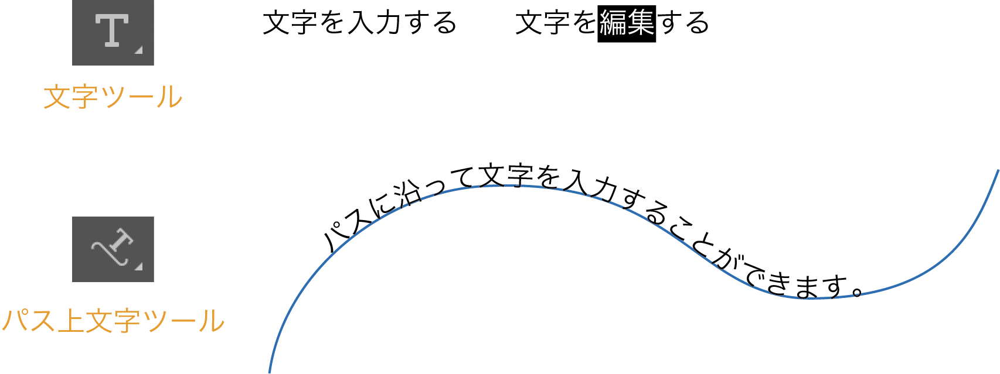
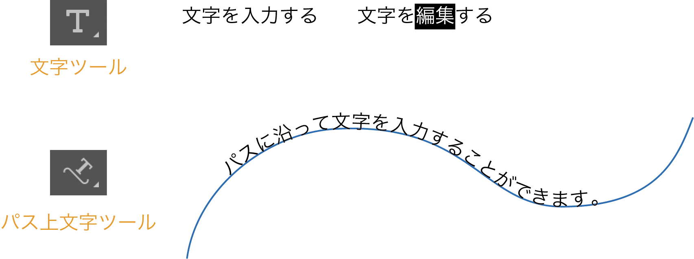
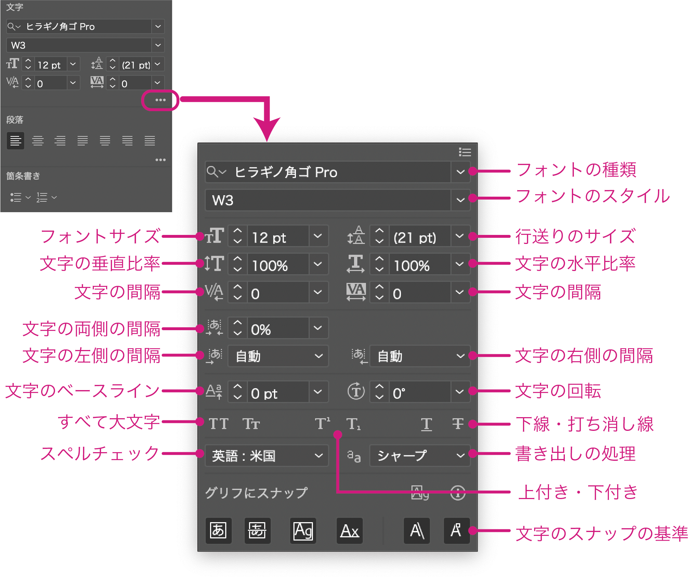
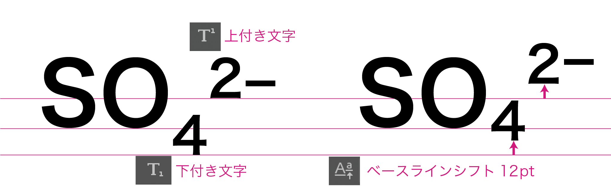

文字ツールとパス上文字ツール
ツールバーで文字ツールを選択し、アートボード上でマウスをクリックすると、クリックしたところに文字を挿入することができます。
文字ツールを長押しして、パス上文字ツールを選択し、パスを選択すると、パス上に文字を挿入することができます。
文字を編集するときは、文字ツールを使って、すでに挿入されている文字をクリックします。
ツールバーで文字ツールを選択し、アートボード上でマウスをクリックすると、クリックしたところに文字を挿入することができます。
文字ツールを長押しして、パス上文字ツールを選択し、パスを選択すると、パス上に文字を挿入することができます。
文字を編集するときは、文字ツールを使って、すでに挿入されている文字をクリックします。
文字の書式を変更したい場合は、 選択ツールで文字全体を選択するか、文字ツールで特定の文字を選択し、プロパティパネルから書式の設定をします。
選択ツールで文字全体を選択するか、文字ツールで特定の文字を選択し、プロパティパネルから書式の設定をします。
プロパティパネルの文字のブロックの･･･をクリックすると、書式設定のすべての項目を表示することができます。
文字自体の色を変更するときは、塗りの色を変更します。線の色を指定すると、文字の輪郭に反映されます。輪郭の線幅を太くしたいときは、線の太さで指定します。
文字を縦組み（縦書き）にしたい場合は、選択ツールで文字を選択し、メニューバー＞書式＞組み方向＞縦組みを選択します。
文字ツールで特定の文字を選択し、文字パネルから上付き文字や下付き文字を設定することができます。フォントの種類によっては、文字の上下の位置の調整が必要になり、その場合にはベースラインシフトをします。
